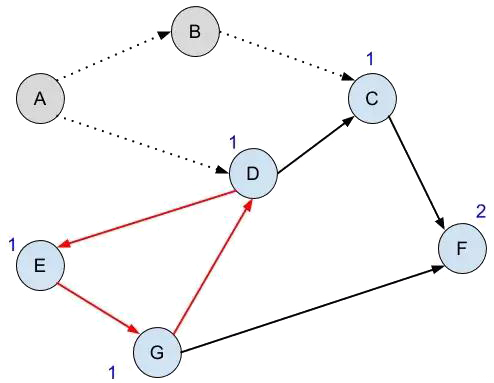

拓扑排序
拓扑排序
引子
下面让我来看一看拓扑序是什么，又有啥子用。
众所周知，万事都要讲究先来后到。比如，你对一个婴儿进行早教，你很自信、很闪耀，觉得此孩儿定是天降奇才，跳过了万水千山，连话都不会说，直接交他拓扑排序，为以后发扬光大OI事业而打下坚实的基础。然后，一段时间以后，你忽然发现，你教授完一万字的长篇大论然而并没有一点用处，甚至人家一眼都没看你。所以，你十分灰心，感受到了生活的无情，决定放下倔强，从头教起。你潜心研究，发现有一些知识需要在某些知识已经掌握的情况之下才可以学习；所以，你编写了一个程序，给出学习各种知识的先后顺序。
为啥是图论
看上面的段子，脑海中浮现出各种问号……
这东西为啥子是图论嘞？
我们先搞一下啥是DAG(有向无环图)：
一个有向图,且不存在环。 多么简洁明了
这时候，考虑将边 $u\rightarrow{v}$ 具体为”做 $v$ 之前要先做 $u$ ”，那么拓扑排序能求出每件事应该在什么时候做，也就是说满足每件事的前置事件都做完后它才能开始做的一种安排。
拓扑序不是唯一的,因为有些点之间不存在拓扑关系。
比如，上图中A和E、B和D等就没有拓扑关系。
建图到此结束。
BFS款
入度：指向某个点的有向边条数。
我们发现，对于任意一个DAG，总有入度为$0$的节点。完成这个节点无需依赖其他任何节点的完成情况。
因此，我们维护一个队列(其实栈也不是不行)，队列中包含所有入度为$0$的节点。
对于每一个队列中节点，删去其所有初度，并将删边后入度为$0$的节点加入队列。
如需按照字典序大小求拓扑序，改为使用优先队列即可(即优先访问字典序大/小的节点)。
记录已经遍历的节点数，若队列为空并且已经遍历的节点数小于总节点数，则说明存在环。
如上图，当出现环时，删除一定数量的节点和边后，出现所有节点入度均大于$0$的情况，即队列为空。
两种算法复杂度均为$O(n+m)$。
POJ2367 外加一点补充
#include <cstdio>
#include <queue>
#include <vector>
using std::vector;
const int maxe = 109; //最大节点个数
int len, in[maxe], cnt; //len总节点数,in[i]第i号节点的入度,cnt已经遍历的节点个数
vector<int> next[maxe]; //邻接链表存图
std::priority_queue<int, vector<int>, std::greater<int> > running; //如无需按字典序输出,请改用queue;注意两个'>'中间有一个空格,看好是小顶堆还是大顶堆
int main()
{
scanf("%d", &len);
for (int i = 1; i <= len; i++)
{
int a;
while (1)
{
scanf("%d", &a);
if (!a)
break;
next[i].push_back(a);
in[a]++; //每有一条指向节点的边,入度+1
}
}
for (int i = 1; i <= len; i++)
{
if (in[i] == 0) //查找所有入度为0的节点
running.push(i);
}
while (!running.empty())
{
int top = running.top();
running.pop();
printf("%d ", top);
cnt++; //已经遍历的节点数+1
int n = next[top].size();
for (int i = 0; i < n; i++) //遍历所有出度,进行删边操作
{
int now = next[top][i];
in[now]--;
if (!in[now]) //如果删边后入度为0,则加入队列
running.push(now);
}
}
if (cnt != len) //如果以遍历节点数小于总节点数,说明有环
printf("error\n");
return 0;
}
DFS款
选定一个节点，递归完成他的入度。
对于每个节点循环。
还是学上面那个吧